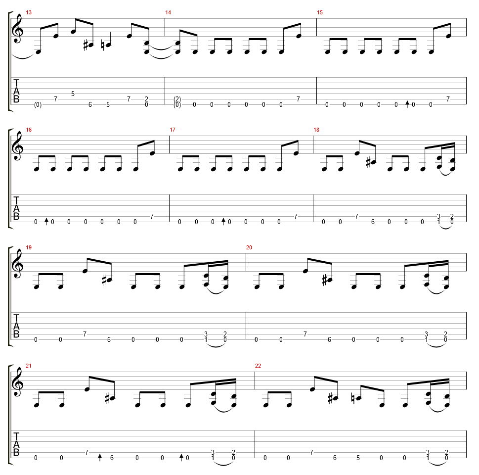

Nel log del 7 marzo avevo cominciato l'implementazione della riproduzione di tab sul manico dello strumento, il risultato era buono (per un primo prototipo) ma il timing della riproduzione era su una scala sbagliata. Oggi ho speso fin troppo tempo per capire cosa non andasse nella mia implementazione, per poi realizzare che i valori temporali espressi nel modello di dati di AlphaTab non si riferiscono a valori in secondi o millisecondi, ma al numero di tick nativo alla libreria, che va convertito da/verso i secondi per poter lavorare con altri sistemi. Questo non e' documentato nella documentazione e mi ha creato non pochi problemi nel capire il motivo della discrepanza, l'unico modo nel quale sono riuscito a trovare la fonte della differenza in scala di tempo tra la riproduzione audio midi e i timestamp e' stato osservando il codice sorgente di AlphaTab.
Il video mostra la riproduzione della seguente sezione di tab:
